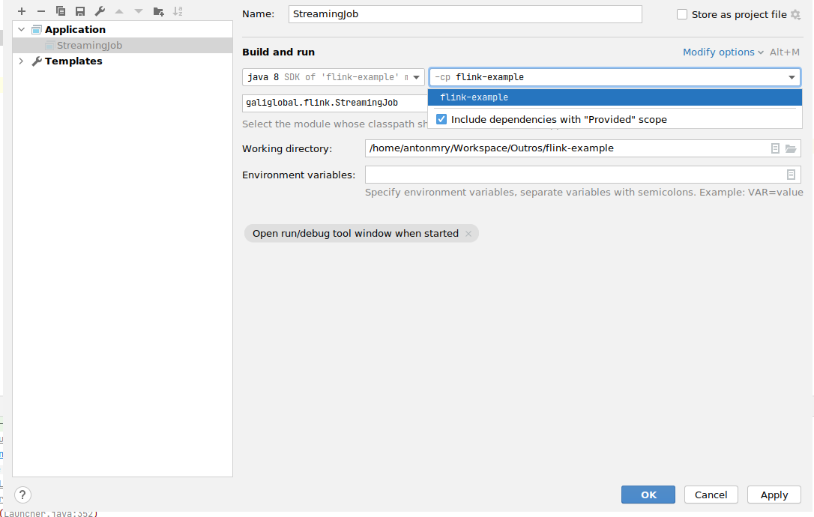
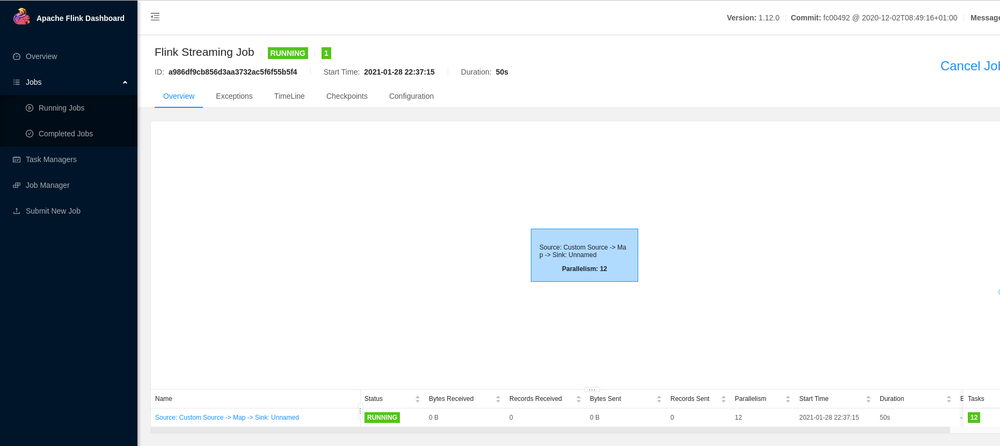
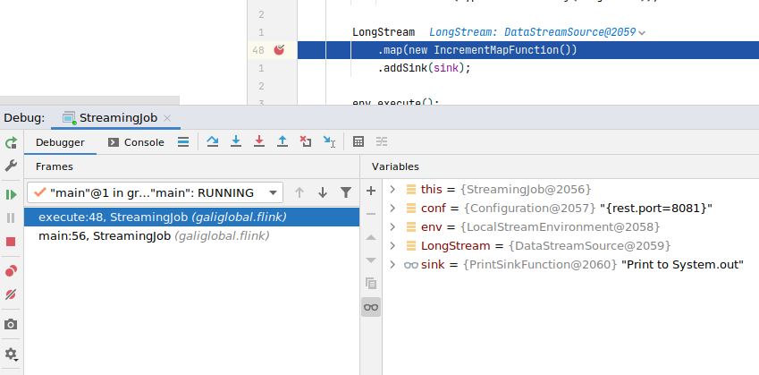
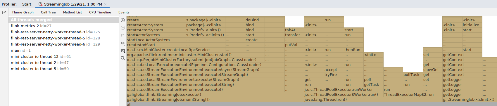
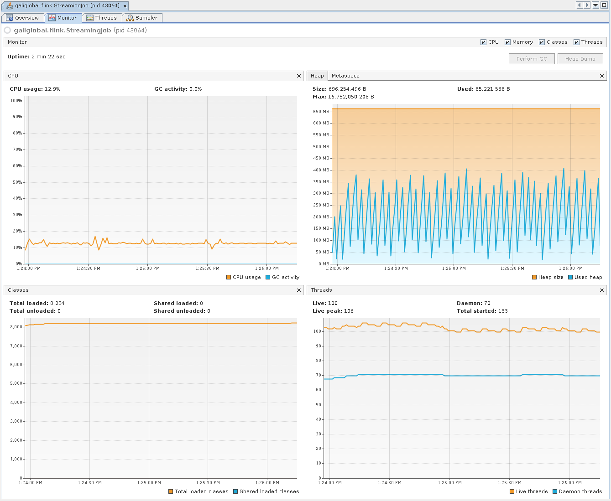
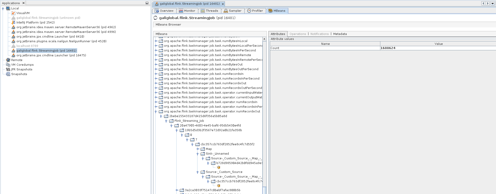
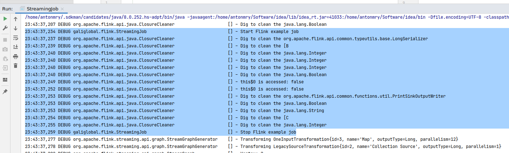
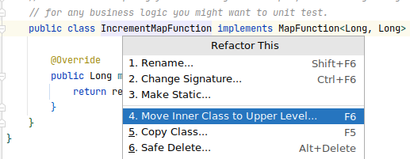
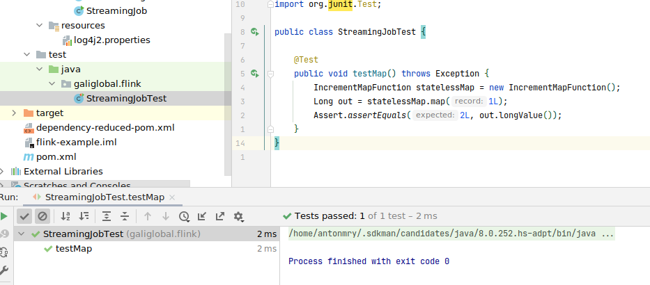

This work is licensed under a Creative Commons Attribution-ShareAlike 4.0 International License.
This work is licensed under a Creative Commons Attribution-ShareAlike 4.0 International License.
30 January 2021
Apache Flink is an open-source, unified stream-processing and batch-processing framework. As any of those framework, start to work with it can be a challenge. Even if there is a good Getting Started or a great (and free) Hands-on Training, there are always questions about how to start, how to debug problems or how to launch the project in your IDE.
In this article, I summarize some of the notes I've been writing since I started with Flink. If Flink is something new for you, it's an easy guide to follow. If you are already an experienced Flink developer, there are some tricks you may find useful: access to JMX metrics, profiling, etc.
The source code is available in this GitHub repository.
The first step is to install Flink. This is straightforward, just go to the Flink download page and download it:
wget https://archive.apache.org/dist/flink/flink-1.12.0/flink-1.12.0-bin-scala_2.12.tgz
tar -zxvf flink-1.12.0-bin-scala_2.12.tgz
Note: it's a good idea to create a variable $FLINK_HOME pointing to the Flink folder.
Start the cluster:
$FLINK_HOME/bin/start-cluster.sh
You can access the Flink Web Dashboard in your browser.
We aren't going to need it initially so it's better to stop it:
$FLINK_HOME/bin/stop-cluster.sh
To bootstrap the project, just execute the following Maven command:
mvn archetype:generate \
-DarchetypeGroupId=org.apache.flink \
-DarchetypeArtifactId=flink-quickstart-java \
-DarchetypeVersion=1.12.0 \
-DgroupId=galiglobal \
-DartifactId=flink-playground \
-Dversion=0.1 \
-Dpackage=galiglobal.flink \
-DinteractiveMode=false
cd flink-playground
The structure of the project is quite simple:
.
├── pom.xml
└── src
└── main
├── java
│ └── galiglobal
│ └── flink
│ ├── BatchJob.java
│ └── StreamingJob.java
└── resources
└── log4j2.properties
We are going to focus only on StreamingJob.java.
We are going only to cover my favourite Java IDE: IntelliJ IDEA. Other IDEs should work similarly. First of all, import in the IDE as a maven project. You can do it easily from the command-line.
idea pom.xml
You can go to StreamingJob.java and execute it as a normal Java application using the Shift+F10 shortcut on Linux/Windows. An error like this should appear in the output:
Exception in thread "main" java.lang.NoClassDefFoundError: org/apache/flink/streaming/api/environment/StreamExecutionEnvironment at galiglobal.flink.StreamingJob.main(StreamingJob.java:39) Caused by: java.lang.ClassNotFoundException: org.apache.flink.streaming.api.environment.StreamExecutionEnvironment at java.net.URLClassLoader.findClass(URLClassLoader.java:382) at java.lang.ClassLoader.loadClass(ClassLoader.java:418) at sun.misc.Launcher$AppClassLoader.loadClass(Launcher.java:352) at java.lang.ClassLoader.loadClass(ClassLoader.java:351) ... 1 more
This is a particular problem of Flink running in the IDE: some dependencies are missing. To solve it, go to Run -> Edit Configuration -> Modify options -> Use classpath of module and in the new field, mark Include dependencies with "Provided" scope.

Re-run the job and a new error appears:
Exception in thread "main" java.lang.IllegalStateException: No operators defined in streaming topology. Cannot execute. at org.apache.flink.streaming.api.environment.StreamExecutionEnvironment.getStreamGraphGenerator(StreamExecutionEnvironment.java:2000) at org.apache.flink.streaming.api.environment.StreamExecutionEnvironment.getStreamGraph(StreamExecutionEnvironment.java:1991) at org.apache.flink.streaming.api.environment.StreamExecutionEnvironment.getStreamGraph(StreamExecutionEnvironment.java:1976) at org.apache.flink.streaming.api.environment.StreamExecutionEnvironment.execute(StreamExecutionEnvironment.java:1822) at galiglobal.flink.StreamingJob.main(StreamingJob.java:62)
It's time to create our Flink job.
Let's add a new Java class to our project called RandomLongSource:
public class RandomLongSource extends RichParallelSourceFunction<Long> {
private volatile boolean cancelled = false;
private Random random;
@Override
public void open(Configuration parameters) throws Exception {
super.open(parameters);
random = new Random();
}
@Override
public void run(SourceContext<Long> ctx) throws Exception {
while (!cancelled) {
Long nextLong = random.nextLong();
synchronized (ctx.getCheckpointLock()) {
ctx.collect(nextLong);
}
}
}
@Override
public void cancel() {
cancelled = true;
}
}
This class is just generating an infinite series of long numbers to feed our job.
Let's modify now StreamingJob.java to process it and print the result:
public class StreamingJob {
private SourceFunction<Long> source;
private SinkFunction<Long> sink;
public StreamingJob(SourceFunction<Long> source, SinkFunction<Long> sink) {
this.source = source;
this.sink = sink;
}
public void execute() throws Exception {
StreamExecutionEnvironment env = StreamExecutionEnvironment.getExecutionEnvironment();
DataStream<Long> LongStream =
env.addSource(source)
.returns(TypeInformation.of(Long.class));
LongStream
.map(new IncrementMapFunction())
.addSink(sink);
env.execute();
}
public static void main(String[] args) throws Exception {
StreamingJob job = new StreamingJob(new RandomLongSource(), new PrintSinkFunction<>());
job.execute();
}
public class IncrementMapFunction implements MapFunction<Long, Long> {
@Override
public Long map(Long record) throws Exception {
return record + 1;
}
}
}
Note: this class is from the Hands-on Training.
If you execute it, you will see an infinite list of long numbers:
...
3> 3869376031196493001
12> 4265560998598976840
12> -7434045225389162179
1> 3964290136030554255
1> 8881056576399978883
...
Note: The 3>, 12>, 1> indicate which sub-task (i.e., thread) produced the output.
This is one of the most surprising things for Flink beginners: you don't need a cluster to develop a Flink job, you can easily do it locally from your IDE and it works quite well.
There are some minor differences. For example, to access the Flink Web Dashboard you will need to add the following dependency to maven:
<dependency>
<groupId>org.apache.flink</groupId>
<artifactId>flink-runtime-web_2.11</artifactId>
<version>${flink.version}</version>
</dependency>
And modify the env variable with the following code:
Configuration conf = new Configuration();
StreamExecutionEnvironment env = StreamExecutionEnvironment.createLocalEnvironmentWithWebUI(conf);
Note: credit goes to this StackOverflow answer.
Re-run the job and you should be able to access the Flink Web Dashboard and see your job running:

One of the nice things of run Flink jobs in your IDE is to able to debug your Flink job using breakpoints as usual.

Other nice thing you may use with IntelliJ is profiling to research and improve the performance of your jobs. See Profiling Tools and IntelliJ IDEA Ultimate for more info. It works well with this setup:

You can also use VisualVM and launch it from IntelliJ with the VisualVMLauncher plugin:

Flink generates metrics exposed through different interfaces including JMX. See Flink metrics for more info.
To activate it, add the following dependency to pom.xml:
<dependency>
<groupId>org.apache.flink</groupId>
<artifactId>flink-metrics-jmx_2.11</artifactId>
<version>${flink.version}</version>
</dependency>
And change the env variable to expose metrics in the JMX interface:
Properties props = new Properties();
props.put("metrics.reporter.jmx.factory.class", "org.apache.flink.metrics.jmx.JMXReporterFactory");
Configuration conf = ConfigurationUtils.createConfiguration(props);
StreamExecutionEnvironment env = StreamExecutionEnvironment.createLocalEnvironmentWithWebUI(conf);
Run the job as usual and open it in VisualVM. You need to install the VisualVM MBeans Browser. Metrics should be available in the MBeans tab:

Let's add some proper logging to our job. First of all, add the following field to StreamingJob.java:
private static final Logger LOG = LoggerFactory.getLogger(StreamingJob.class);
Let's delete the longStream variable and create a new one with some log messages:
LOG.debug("Start Flink example job");
DataStreamSink<Long> logTestStream = env.fromElements(0L, 1L, 2L)
.map(new IncrementMapFunction())
.addSink(sink);
LOG.debug("Stop Flink example job");
Modify src/main/resources/log4j2.properties to use the DEBUG log level:
rootLogger.level = DEBUG
Re-run the job and you should see the new log traces:

When running the job locally, the log level is quite verbose and it may be hard to find your messages between the Flink messages. Let's configure that. Edit src/main/resources/log4j2.properties again to add the following lines:
logger.flink.name = org.apache.flink
logger.flink.level = warn
Re-run the job and you should only see the proper logs messages.
One of the most important things when creating jobs is to have proper tests you can run from your IDE. It will make you go faster because you can make changes, run the test and be sure everything is working as it was before the change. That level of confidence in your changes worths the cost of writing the test from the very beginning.
Add the following dependency to your pom.xml:
<dependency>
<groupId>org.apache.flink</groupId>
<artifactId>flink-test-utils-junit</artifactId>
<version>${flink.version}</version>
</dependency>
Move the inner class IncrementMapFunction to their own file:

Now let's add a unit test to src/test/java which tests this function:
public class StreamingJobTest {
@Test
public void testMap() throws Exception {
IncrementMapFunction statelessMap = new IncrementMapFunction();
Long out = statelessMap.map(1L);
Assert.assertEquals(2L, out.longValue());
}
}
Run the test from the IDE and see the result:

For more information, see Testing Flink Jobs in the official documentation. It's particularly interesting how to test complete jobs. You can find also good examples in the official Flink training tests.
Once we are done with our job, we can deploy it in a local cluster. The first step is to enable the log level Debug for the local cluster. Edit $FLINK_HOME/conf/log4j-cli.properties and change root level to debug:
rootLogger.level = DEBUG
Start the cluster again:
$FLINK_HOME/bin/start-cluster.sh
We need to modify our source code to use a remote execution environment so you should replace the env variable again:
StreamExecutionEnvironment env = StreamExecutionEnvironment.getExecutionEnvironment();
Compile our job:
mvn clean package -Pbuild-jar
Run the job in the local cluster:
$FLINK_HOME/bin/flink run target/flink-playground-0.1.jar
It should obtain an output similar to:
Job has been submitted with JobID bbea3ed5f5082a7267f85d92807b19dc
Program execution finished
Job with JobID bbea3ed5f5082a7267f85d92807b19dc has finished.
Job Runtime: 827 ms
If you check the logs, you should see your traces:
grep -R "example job" $FLINK_HOME/log/
In this article, we have covered the basics and some typical gotchas to work with Apache Flink in local environments. It's really important to invest time in your setup to be productive and have a pleasant experience building your jobs. Each minute you spent improving your workflow will pay off in the future.
Did I miss something? You can comment on GitHub or just drop me a note on Twitter!
This work is licensed under a Creative Commons Attribution-ShareAlike 4.0 International License.